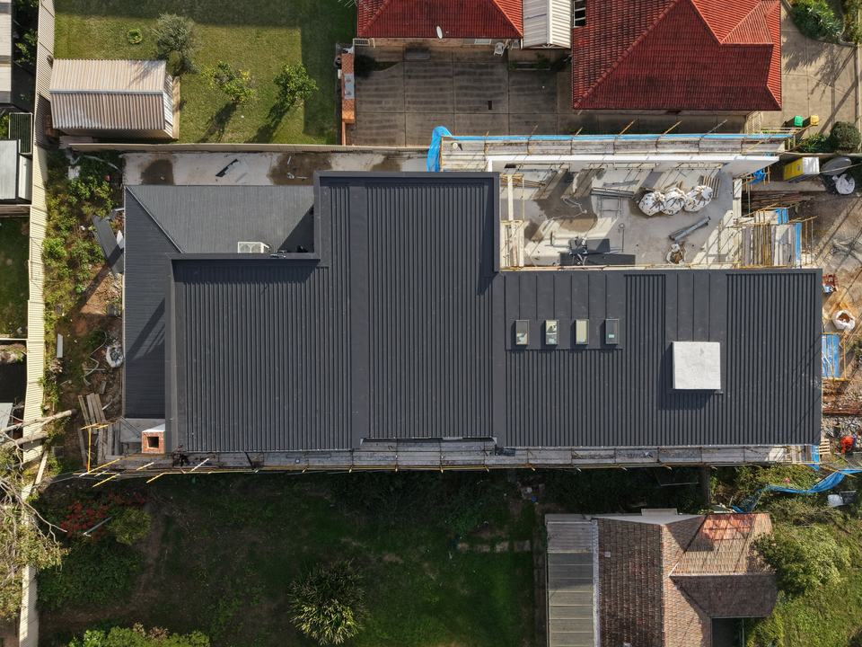

Skylights
We supply, fit and repair skylights in metal and tiled roofs. The ones we fit are VELUX.
Metal or tile, new roof or old
We fit skylights into new roofs while they are being sheeted, and we cut them into existing roofs. In Kingsford we fitted a row of VELUX skylights into a tiled roof. One metal roof had so many that we posted it on Instagram and asked people to count them.
Why the flashing matters
A skylight is a hole in your roof, so the flashing around it has to be right. We use the flashing kit made for that skylight and that roof type.
Repairs and replacements
If an old skylight is leaking, fogging up or cracked, we can reseal it, reflash it or swap it for a new one.
Photos from our jobs
Questions
Can you put a skylight in a tiled roof?
Yes. We did a row of them in a tiled roof in Kingsford.
Can I add skylights during a re-roof?
Yes, and that's the easiest time, because the roof is already open and the flashing goes in with the new sheets.
Which skylights do you use?
VELUX.
Got a roof that needs doing?
Quotes are free. Call, or send us a few details and we'll call you.